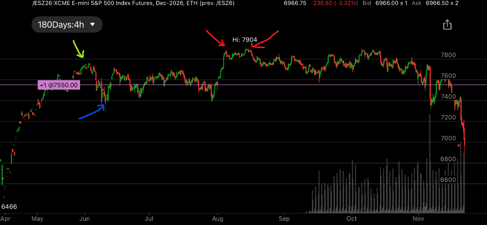
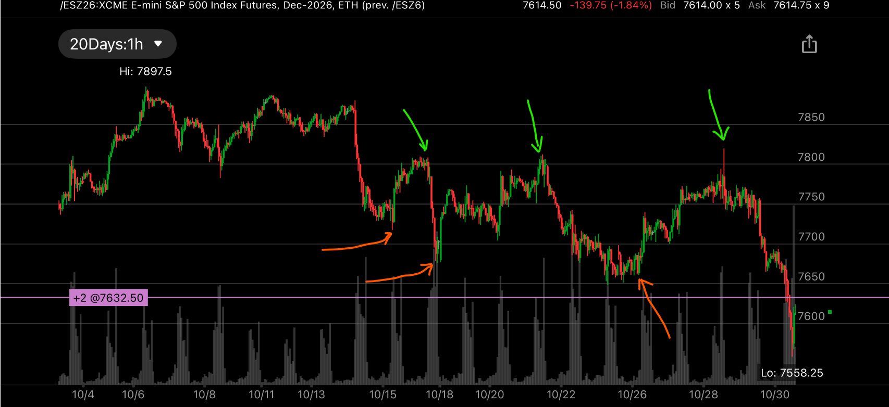
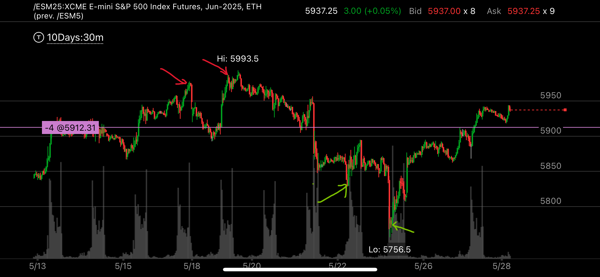
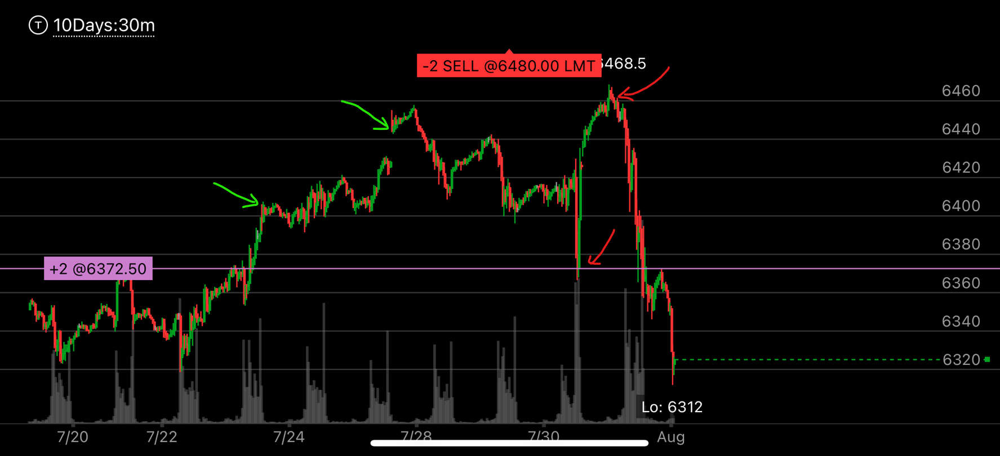
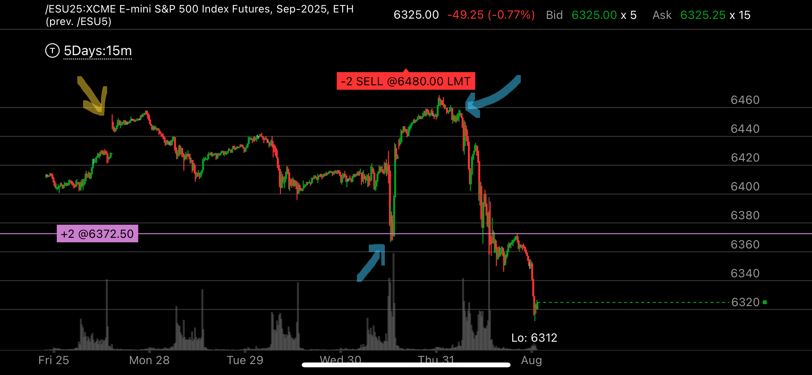
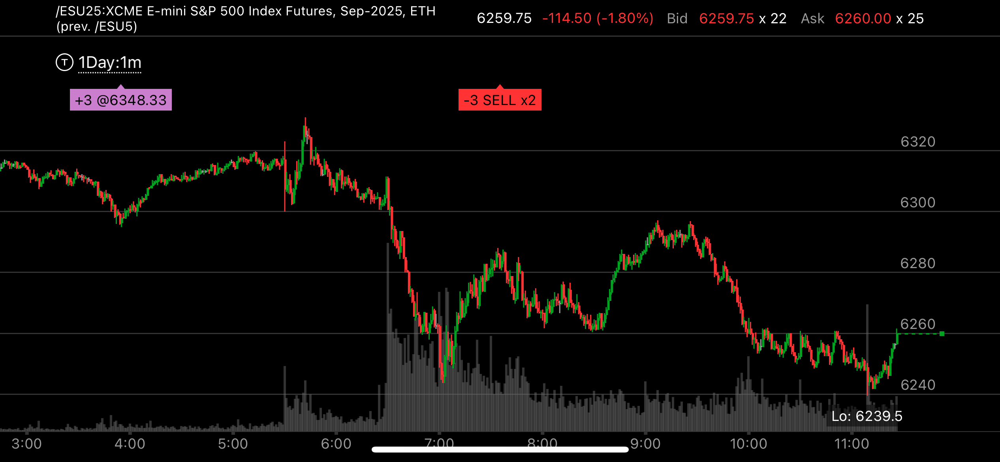
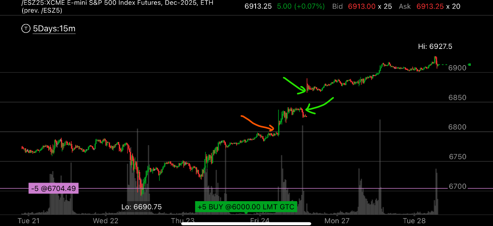
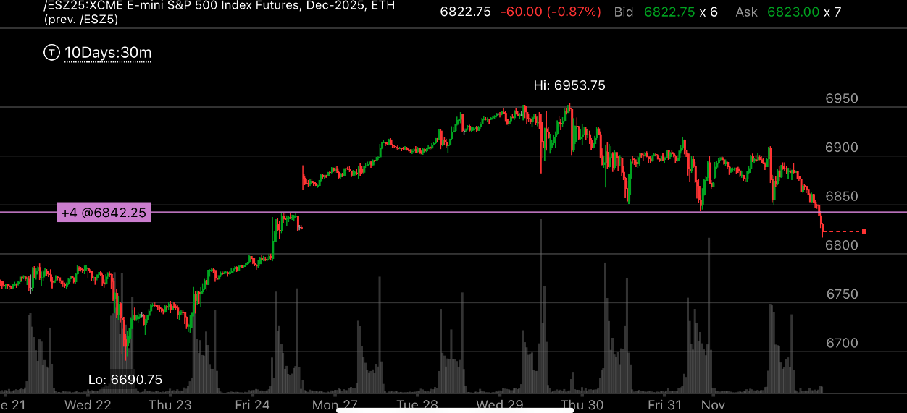
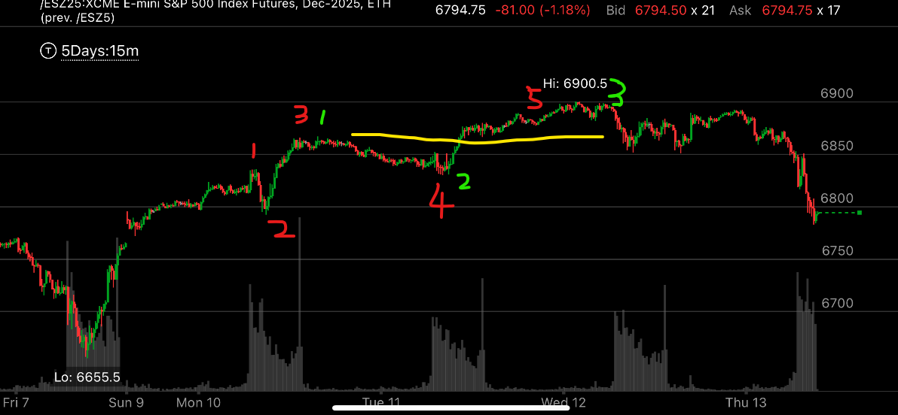

超买走势
- 并非所有的走势都是五浪走势，有些是超买走势。
- 超买也会导致大幅下跌，不一定需要加速 。超买的发生，是超过前面的范围一定距离，不是刚刚好超过，而是超过很多，并且没有立刻返回，在高位徘徊一段时间，这个就构成了超买
- 超买引起的大跌，要么是超卖，要么是加速下跌，不会轻易结束
- 它大幅下跌后，反弹很弱，然后再次大幅下跌，这时，在底部形成双底。这个其实就是用超卖对付超卖。因为下跌后，反弹很弱，继续大跌，这个就是超卖信号
- 它第一次下跌后，快速反弹，但是没有形成了一个完成走势，然后再次下跌，然后走平，这个是一个相对弱势。
- 有些走势，回调很小，就立刻创新高，看起来似乎是加速，但是因为回调太小了，其实不是加速走势。而是一个叠加的上涨，也就是超买走势。
- 超买状态反弹的时候，时间持续很短，超过幅度很小。比如它反弹，必须超过上次反弹的点数，这时，它可能刚刚超过就立刻回头，或者只超过很小的幅度
- 超买状态的假底部，常常时间很短，或者刚刚超过前面尖锐底部很小就反弹。

图示: 180天的走势，所以一定不要忘记这个拉长时间线。
- 绿色箭头是第一个高点。
- 两个红色箭头。它不是加速上涨，但是它远远超过了绿色箭头高度，不是高一点点，而且没有回调返回原来的位置，而是继续创新高，形成了一个相对强势，就是上涨变得更强了。
- 虽然第二个红色箭头下跌幅度超过了第一个红色箭头，但是它相对于绿色箭头，它超买了。所以未来一定下跌。这个实际上持续了半年以上才真的下跌。
- 绿色箭头的低点是蓝色箭头，要想消除超买，红色箭头的高点下跌应该低于蓝色箭头才对，但是并没有，它过了四个月才超过。这时已经积累了足够的能量

图示: 超买状态的假的底部和反弹
- 三个红色箭头和三个绿色箭头，代表三个底部和三个顶部
- 第二个底部，比第一个底部更低，但是很快反弹，说明未来会低于这一点，它反弹更高，高于第一个高点，但是也只高了一点点。
- 第三个底部，只比第二个底部低了很小，就长时间震荡，形成了底部，它反弹的时候，
第三个高点只比第二个高点高了一点，而且持续时间非常短
- 这三个底部，第二个相对于第一个，是相对强势，到了底部立刻反弹，第三个相对第二个，是相对弱势，到了底部徘徊很久。
- 这三个顶部，都是非常弱的，在高点时间非常短就回去了。都不是典型的顶部，这些都超买状态导致的。

图示: 超买状态下轻微的加速上涨，就可以造成反转。
- 红色箭头是反弹后第一个高点。
- 黄色箭头，是加速上涨，幅度只比红色箭头高4个点，而且持续时间极短。但是，因为大盘处于超买状态，它的底部没有加速，不是真实底部，所以就会反转。
- 绿色箭头没有创反弹新高，不是加速状态。

图示:
- 两个绿色箭头，下跌的时候出现了超卖。它下跌后，没有明显的反弹，再次创新低。
同一个走势，15分钟和30分钟分析和一分钟的当天走势

图示:
- 可以看到它从6468.5新高点下跌后，反弹很小，基本就是大跌，走平，再次大跌的样子。

图示:
- 这个是同一个图，只是15分钟分辨率
- 从最高点开始，它中间稍微反弹一点点，然后再次大跌。形成了超卖走势。

图示:
- 这个是同一个图，只是1分钟
- 这个是这个走势反转的当天，它出现了一个大幅的反弹，然后再次下跌，形成双底。要注意，它不需要向下加速下跌。因为本来也不是反转走势

图示:
- 红色箭头是创新高，然后一直在高位徘徊。
- 绿色箭头，它收盘前稍微回调，然后周日大幅高开，这个不是加速走势，而是一个超买走势。
- 它在视觉上，并不符合拉回走势，第一浪不能是走平的浪，而是应该是尖锐的拉回。

图示:
- 这个图是它随后几天的图，它其实就是一个超买的走势，不是五浪走势。

图示:
- 这个也是超买，我试图用两种方式标记，都不合适。红色标记，2浪太小了。而且第三浪不是加速走势。绿色标记，第一浪是走平的，没有尖锐的样子，第三浪是加速走势。
但是最后也证明，没有第五浪。所以这个完全和五浪走势无关。